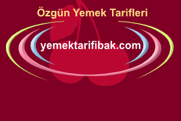

Yağlı Boya Nasıl Çıkartılır?
Yağlı Boya Nasıl Çıkartılır? Benzin, neft, saf ya da alkol karıştırılmış terebentin ile temizleyebilirsiniz. Eski lekeler aynı işlemi bir çok defa tekrarlamakla çıkar.
Yağlı Boya Nasıl Çıkartılır? Benzin, neft, saf ya da alkol karıştırılmış terebentin ile temizleyebilirsiniz. Eski lekeler aynı işlemi bir çok defa tekrarlamakla çıkar.
Meyve Suyu Lekesi Nasıl Çıkartılır? Kumaşın üstüne dökülür dökülmez üstüne tuz serpin ilk yıkamada çıkacaktır.
Tentürdiyot Lekesi Nasıl Çıkartılır? Leke yeni ise, alkol yararlıdır. Eğer eski ise, benzin vb. şeyler ya da oksijenli su kullanılır.
İpekli Kumaşlarda Yağ Lekesi Nasıl Çıkartılır? Önce yağ lekesi bıçakla kazınır. Sonra üstüne bildiğimiz tebeşir tozu serpilir. Üstüne bir kurutma kağıdı konup sıcak ütü ile ütülenir. daha sonra kumaş fırçalanır.
Zeytinyağı Lekesi Nasıl Çıkartılır? Sakın sıcak su ya da kolonya kullanmayın. Hemen bir lokma ekmek içini yuvarlayıp lekenin Üstünde gezdirin. Çıkacaktır.
Beyaz Çamaşırda Mürekkep Lekesi Hemen lekenin üstüne sulandırılmış hardalı yayın. Yarım saat kadar bekleyip , süngerle lekeli yeri yıkayın.
Dökülme Anında Mürekkep Lekesi Giysilerden Nasıl Çıkar? Çocuklu ailelerde daha çok görülen mürekkep lekeleri giysilerin üzerinden şu yöntemle çıkarılır. Kumaşın üzerine dökülen mürekkebin üstüne hemen bir kurutma kağıdı konarak mürekkebin daha fazla yayılması önlenir. Daha sonra da çiğ süt temiz bir pamukla kurutma kağıdı üstüne sürülür. Bu işlem bir kaç kez tekrarlandığında lekenin çıktığı görülür.
Mum Lekesi Nasıl Çıkartılır? Leke üstüne kurutma kağıdı koyup kızgın ütü ile ütüleyin. Eriyen mum, yağ lekesi yapmadan, kurutma kağıdına geçecektir.
Yıkanabilir Renkli Kumaşların Solmaması İçin Yıkama suyuna biraz tuz katınız. Renklerini aynen korurlar.
Yıkanabilir Kumaşlarda Kahve Lekesi Lekeler birkaç aylık bile olsa, saf gliserin ile iyice oyun. Yarım saat bekleyin. Sonra her zamanki gibi yıkayın.
Ütüde Sararan Çamaşır Sararan kısmı nemlendirin. Üstüne mısır nişastası serpin. Sonra, gene bir bez aracılığıyla, ütünüzle kurutun. Leke yok olur. Bir başka yol da sararan kısmi oksijenli su ile ıslatıp, gene ütü ile kurutmaktır. Bir üçüncü yol da sararan kısmı tuza batırılmış limonla ovmak ve güneşte kurutmaya bırakmaktır.
Yapışan Çiklet Elbisenizden Nasıl Çıkar? Kendimiz çiğnemesek de elbisemize her an bir çikletin yapışması olağandır. Çikletin yapıştığı bu yerin tam altına isabet eden yerine naylona sarılmış bir miktar buz koyun. Biraz bekleyin buzun soğutucu etkisiyle çiklet donar. Sonra temiz bir fırçayla bu donan çikleti fırçalarsanız hepsi yapıştığı yerden çıkar.
Etek ve Pantolondaki Parlaklıkların Giderilmesi Kabuğu soyulmuş bir patates; iyice yıkadıktan sonra ikiye bölün. Bu kestiğiniz tarafı kumaşın parlak ye¬rine sürmeye başlayın. Bir kaç kez tekrarlayınız bu işlemden sonra eteğinizi kurumaya bırakın. iyice kuruduktan sonra da temiz bir fırçayla fırçalayın. Kumaşta ki parlaklıktan eser kalmadığını göreceksiniz.
Taze Balık Nasıl Anlaşılır? Taze balığın gözleri parlak ve lekesiz olur. Solungaçlarının kırmızı ve canlı olması da önemlidir. Pulları solgun değil diri görünmelidir.Taze balığın kuyruğu sert durur ve parmağınızla etine bastırdığınızda hemen eski halini alır.